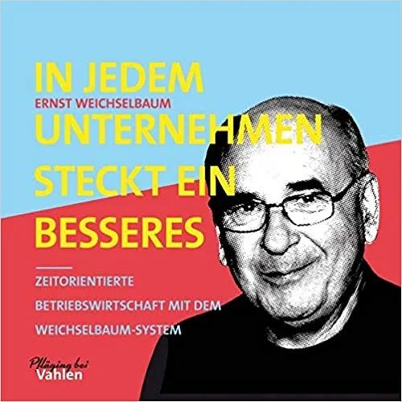
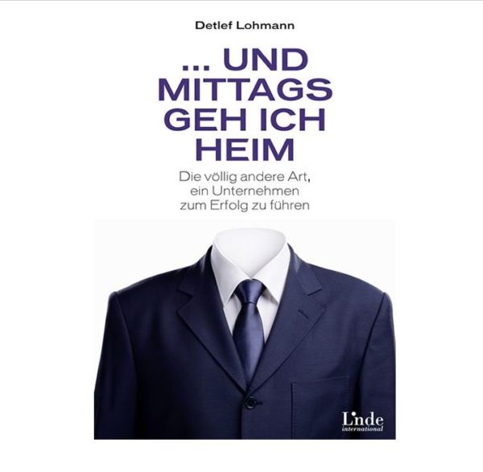

Innovation Stuntman-Inspiration pur
In diesem Buch lernen Sie Menschen kennen, die mit ihrer Arbeit unsere Welt neu erfinden. »Innovation Stuntmen« führt Sie auf eine reichhaltig bebilderte Reise durch die aufregendsten Felder der Innovation.
Ich bin immer wieder begeistert, wenn ich Geschichten von Menschen höre und lese, denen es gelingt, „out oft he box“ zu denken und dabei frei von allen bisher bekannten Lösungen völlig neue Wege zu gehen. Insbesonders, wenn es um die Lösung gesellschaftlicher Fragen geht. Und ich habe Hochachtung vor der Kraft und Beharrlichkeit, den dieses Querdenkertum manchmal bis zum Erfolg der Idee erfordert. „Innovation Stuntman“ stellt moderne Erfinder vor, die sich den letzten wirklichen Abenteuern stellen: die großen Herausforderungen der Zukunft meistern.
Unter anderem: Der britische Starkoch Arthur Potts Dawson, der mit dem „People’s Supermarket“ das Prinzip Konsum neu erfindet; der Architekt Francis Kéré, der in Afrika eine Baukultur entwickelt hat, die zum Vorbild für den Rest der Welt werden kann; der kalifornische Gamedesigner Jenova Chen, der mit seinen preisgekrönten Videospielen neue Gefühlswelten auslotet. Und die New Yorker Designerin Katie Salen, die die Schule in ein Spielfeld verwandelt und so das Lernen in der Zukunft erforscht. Darüber hinaus lernen Sie die Architekten Skylar Tibbits und Anders Willhelmson kennen und unternehmen mit den Informatikern Hod Lipson, Seth Cooper und Yaw Anokwa Ausflüge in die Gebiete der künstlichen Intelligenz, der medizinischen Forschung und des aufstrebenden digitalen Afrikas.
View schreibt dazu: Erfinderische Draufgänger, „Eine faszinierende Porträtgalerie von Zeitgenossen, die als Pioniere und Wegbereiter die Zukunft gestalten.“
Impulse: Erfolgsgeschichten zum Abgucken, „Die Erfindergeschichten sind gut erzählt und schön bebildert – und bieten damit mehr Anregungen für den eigenen Erfindungsreichtum, als manche der üblichen theorielastigen Anleitungen zum Innovationsmanagement.“
Weitere Artikel

Gestalten statt Analysieren
Ernst Weichselbaum hat in seinem Buch, IN jedem unternehmen steckt ein besseres“ formuliert: Jede Analyse des bisherigen ist überflüssig. Zunächst hat mich diese Aussage etwas geschockt, aber bei genauerem Nachdenken kann ich ihr …

Und mittags geh ich heim – Die andere Art ein Unternehmen zu führen
Auf meiner Walz im letzten Herbst habe ich ein Unternehmen mit einer sogenannten Beta-Kultur besucht und war begeistert. Detlef Lohmann, Autor des Buches „Und mittags geh ich heim“, ist Chef dieses Unternehmens. Sein Buch war für …